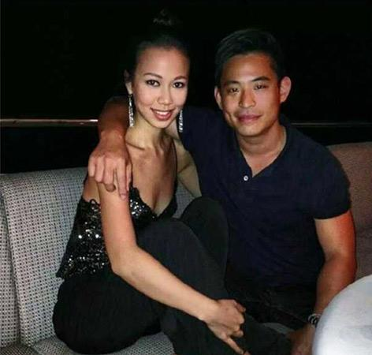
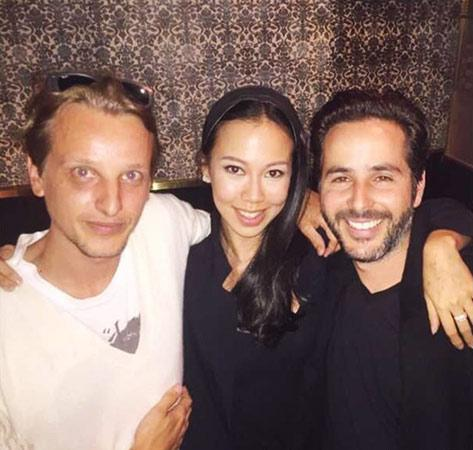

详情
林青霞继女穿低胸装与男友合影 亲密搂肩秀恩爱
2015年5月15日
来源：网易娱乐

知名博主“南唐遗少”晒出一组林青霞27岁继女邢嘉倩的近照，照片中邢嘉倩揽着男性友人合影，十分豪迈，与男友合影时则身穿低胸装，性感大方。

1994年，林青霞嫁给了香港商人邢李源，两人结婚20余年婚变传闻不断，去年林青霞60岁大寿一家人幸福献身粉碎一切谣言。林青霞和邢李源生育了两个女儿，而邢李源和前妻也有一个大女儿邢嘉倩，和林青霞关系非常融洽胜似亲生母女，继女更是曾大赞林青霞是“世界上最好的继母”。作为富豪千金，邢嘉倩是名副其实的名媛，不只有爬梯和应酬，更热衷于做慈善和公益事业